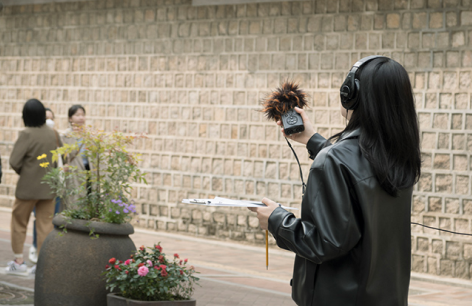

현재/예정 프로그램
Current/Upcomimg Events[미술관 밖 프로젝트] #_만나는 손과 손: 수평적 감각
2024 청소년 진로 탐색 프로그램<부산모카 반짝>
[미술관 밖 프로젝트] #_멀지만 가까운, 가깝지만 먼
[미술관 밖 프로젝트] #_온기, 열기, 녹아내리는
[미술관 밖 프로젝트] #_소리 보기, 읽기, 조합하기
지난 프로그램
Past Events프로젝트 with 김은설 #_만나는 손과 손: 수평적 감각
무언가를 붙일 때 사용해 온 오래된 문구류인 풀이 다양한
관계망을 사유하게 하는 예술적 도구가 됩니다. 손에 풀을 묻히고 반복하면
가느다란 풀실이 만들어지는데요, 김은설 작가는 풀실에서 사람 간의 보이지
않는 관계를 떠올립니다.
끈끈한 풀을 손바닥에 고루 발라 알맞은 거리까지 늘려서 실을 뽑아내는 동작은 적절한 사람 간의 거리에 관해 생각하게 하고, 풀실을 겹쳐 만든 투명한 얇은 막은 은밀한 내면세계를 은유하기도 합니다. 이번 시간에는 김은설 작가와 함께 풀실 모빌을 만들며 자신의 내면 이야기와 주변 사람과의 관계에 관해 대화하는 시간을 갖습니다.
끈끈한 풀을 손바닥에 고루 발라 알맞은 거리까지 늘려서 실을 뽑아내는 동작은 적절한 사람 간의 거리에 관해 생각하게 하고, 풀실을 겹쳐 만든 투명한 얇은 막은 은밀한 내면세계를 은유하기도 합니다. 이번 시간에는 김은설 작가와 함께 풀실 모빌을 만들며 자신의 내면 이야기와 주변 사람과의 관계에 관해 대화하는 시간을 갖습니다.
- 일시:2024. 9. 29.(일)
- 장소:동아대 석당미술관
- 대상:초등 4학년 이상 누구나 (미성년자 참여시 보호자 참석 필수)
- 진행:김은설 작가
- 참여:부산광역시 통합예약시스템
- 문의:부산현대미술관 학예연구실 051-220-7357

2024 청소년 진로 탐색 프로그램<부산모카 반짝>
부산현대미술관은 청소년에게 미술관 관련 직업에 대한
경험을 제공하여 자신의 예술적인 관심사를 발견하고 문화예술 관련 진로
선택에 도움을 줄 수 있는 청소년 진로 탐색 프로그램을 마련하였습니다.
청소년의 창의성을 발휘하고 예술적 소양을 향상시키는 동시에 미술관
관련 직업에 대한 관심과 이해를 증진시킬 수 있는 특별한 시간을 제공합니다.
- 교육대상:부산시 중‧고등학교 학급 단체
- 교육장소:부산현대미술관 교육실 혹은 학급 현장
- 운영일시:2024. 6. 14.(금)-7. 5.(금 / 9. 20.(금)-11. 1(금) 총 30회
- 신청방법:꿈길
- ※ 본 프로그램은 국립현대미술관과 함께 합니다.
프로젝트 with 홍보미 #_멀지만 가까운, 가깝지만 먼
두 번째 프로젝트는 시각예술에서 가장 멀어 보이는 시각
약자를 시각 세계의 한복판인 미술관으로 초대하는 여정을 꾸려갑니다.
시각예술 창작자이자 미술관 청소부로 활약한 독특한 이력을 가진 홍보미
작가가 부산맹학교를 찾아가 시각장애를 가진 학생들과 미술과 비미술의
경계와 그 사이를 탐구하며 서로가 필요한 존재임을 알아가는 시간을 가집니다.
- 일시: 2024. 6. ~ 10. 중 총 6회
- 장소:부산맹학교
- 대상:부산맹학교 고등학생
- 진행: 홍보미 작가
프로젝트 with 김덕희 #_온기, 열기, 녹아내리는
당신에게 소중한 사람이 있나요? 그, 그녀의 손을
유심히 관찰한 적이 있나요? 우리는 주로 얼굴을 보고 상대를 구별합니다.
하지만 만약 얼굴을 볼 수 없다면 손만큼 상대를 잘 구분 할 수 있는 신체
부위도 없습니다. 손에는 지문과 손금 뿐 아니라 세월이 흔적이 고스란히
담겨있습니다. 이 시간에는 소중한 사람을 전시장으로 데리고 와 함께
전시를 감상하고 김덕희 작가와 함께 소중한 사람의 손을 석고로 떠냅니다.
석고 손은 김덕희 작가의 작품으로 완성되며 24년 부산현대미술관 기획 전시에서 만나볼 수 있습니다.
- 일시:2024. 9. 25.(수) ~ 10. 20.(일)
- 장소:동아대 석당미술관
- 대상:부산 시민 누구나 (미성년자 참여시 보호자 참석 필수)
- 진행:김덕희 작가
- 참여:신청서를 작성하여 메일 접수, 미술관에서 참가자 선정 후 전화 안내
- 문의:부산현대미술관 학예연구실 051-220-7357

프로젝트 with SEOM: #_소리 보기, 읽기, 조합하기
SEOM:이 지속해온 <Sound Marking>, <기억을 산책하는 방법>
활동의 연장이자 변형 프로젝트로 일상의 소리 풍경을 재구성합니다. 부산현대미술관과
부산 도심에서는 어떤 소리가 만들어지고 사라질까요? 각각의 소리 주인은 누구이고
어떤 청각적 특징을 지니고 있을까요? 시각 정보가 사라지고 소리만 남았을 때
우리는 소리를 통해 무엇을 보고, 읽고, 떠올리고, 만지고, 기억할 수 있을까요?
아티스트와 함께하는 소리 채집 활동을 통해 귀가 수행하는 여러 감각 활동에 대해 알아봅니다.
- 일시:2024. 7. 6.(토) / 9. 29.(일)
- 장소:부산현대미술관 / 동아대 석당미술관 주변 일대
- 대상:초등 3학년 이상 누구나 (미성년자 참여시 보호자 참석 필수)
- 진행: SEOM: (서하늬, 엄예슬 작가)
- 참여:부산광역시 통합예약시스템
- 문의:부산현대미술관 학예연구실 051-220-7357
